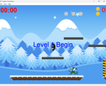
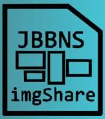

Spartan Touchdown

A 2D platformer game where you play as a football and have to make it to the goalpost at the end of the level. In-between the start and the goalpost you will encounter enemeis (other unviersity mascots) and must grab power ups to make it past them. This was developed with a team of five members including myself over the span of about two months. This project was one of the best programming experiences I've had with a team, and it made me appreciate collaboration in software development much more than I did before.
JBBNS Image Share

An image storage website with google OAuth integration. All backend was done using python and was hosted using Microsoft Azure. The website had a SQLite database that was used to associate images with user accounts. This project was completed with a team of two other people and took roughly a month. I was still getting my feet wet when I was developing this website, and one of my classes had taught me how to handle endpoints in python, and I was also familiar with pythons integration of SQLite so those were the tools I used.